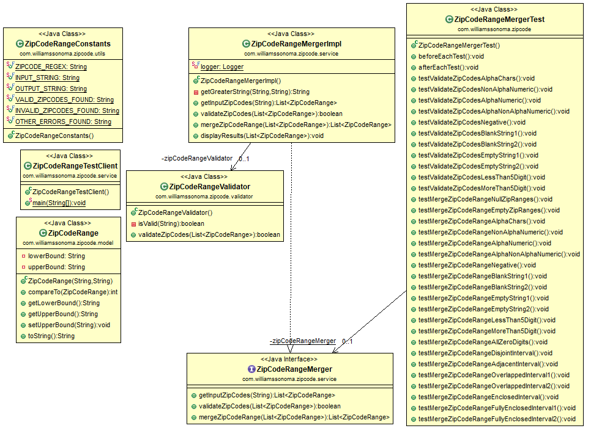

BACKGROUND
Sometimes items cannot be shipped to certain zip codes, and the rules for these restrictions are stored as a series of ranges of 5 digit codes.
For example if the ranges are:
[94133,94133] [94200,94299] [94600,94699]
Then the item can be shipped to zip code 94199, 94300, and 65532, but cannot be shipped to 94133, 94650, 94230, 94600, or 94299.
Any item might be restricted based on multiple sets of these ranges obtained from multiple sources.
PROBLEM
Given a collection of 5-digit ZIP code ranges (each range includes both their upper and lower bounds),
provide an algorithm that produces the minimum number of ranges required to represent the same restrictions as the input.
NOTES
- The ranges above are just examples, your implementation should work for any set of arbitrary ranges
- Ranges may be provided in arbitrary order
- Ranges may or may not overlap
- Your solution will be evaluated on the correctness and the approach taken, and adherence to coding standards and best practices
EXAMPLES:
If the input = [94133,94133] [94200,94299] [94600,94699]
Then the output should be = [94133,94133] [94200,94299] [94600,94699]
If the input = [94133,94133] [94200,94299] [94226,94399]
Then the output should be = [94133,94133] [94200,94399]
Evaluation Guidelines:
Your work will be evaluated against the following criteria:
- Successful implementation
- Efficiency of the implementation
- Design choices and overall code organization
- Code quality and best practices
SOLUTION
Zip Codes
A ZIP Code is a postal code used by the United States Postal Service (USPS) in a system it introduced in 1963.
The term ZIP is an acronym for Zone Improvement Plan. It was chosen to suggest that the mail travels more efficiently
and quickly (zipping along) when senders use the code in the postal address. The basic format consists of five digits.
In some states (for example Maine, Massachusetts etc) the first digit in the Zip Code is 0. Even though the Zip Code is actually
a number but the best data type to represent a Zip Code is a String in Java. It is a Catagorical data because the sum
of two Zip Codes is not meaningful.
So, in order to validate you have to make sure that it is represented with 5 digits.
Assumptions
1. The input is entered as is, with spaces between square brackets and zip code groups separated by commas.
2. We are checking only the validity of the ZipCodes. In other words, there may some combination of Zip Codes which
are semantically correct by definition (5 digits) but they may not be real valid zip codes. For example Zip Code 00000 satisfies
the condition to be a valid Zip Code because it has 5 digits. But, there is no city that has that Zip Code.
3. In a pair of Zip Codes, the lower bound is always lower than than upper bound. In other words, the input is going to contain
Zip Codes [95760,95790] but not like this [95790,95760].
Test Cases
The following are examples of valid and invalid Zip Codes:
Valid ZipCodes
01060
16938
24534
35207
48529
56146
65077
71276
87418
96821
Invalid ZipCodes
ABCDE
!(@#*
AB123
394$$
-1029
empty string ""
blank string 1 or more characters " "
1234
The following test data is used to test the code:
Invalid ZipCodes Test Data
ABCDE
!(@#*
AB123
394$$
-1029
empty string ""
blank string 1 or more characters " "
1234
Valid ZipCodes Test Data
Types of input Strings (In valid data):
Disjoint Intervals
Input String : [94133,94149] [94200,94299] [94600,94699]
Output String: [94133,94149] [94200,94299] [94600,94699]
Adjacent Intervals
Input String : [95742,95743] [94226,94669] [95744,95760]
Output String: [94226,94669] [95742,95743] [95744,95760]
Overlapped Intervals
Input String : [94133,94149] [94200,94299] [94226,94399]
Output String: [94133,94149] [94200,94399]
Input String : [95630,95742] [94226,94669] [95730, 99999] [94133,94133] [94200,94229]
Output String: [94133,94133] [94200,94669] [95630,99999]
Enclosed Intervals
Input String : [95630,95742] [94226,94669] [95700, 95740] [94133,94133] [94200,94229]
Output String: [94133,94133] [94200,94669] [95630,95742]
Fully Enclosed Intervals
Input String : [95630,95742] [94226,94669] [00000, 99999] [94133,94133] [94200,94229]
Output String: [00000,99999]
Input String : [95630,95742] [95742,95743] [95744,95744] [94226,94669] [94133,94133] [00000, 99999] [94200,94229] [01028,01034] [01007,01037] [01060,01065]
Output String: [00000,99999]
Sorting Method Type
Java Collections.sort() method uses merge sort. The complexity of merge sort is O(nlogn)
Data Structures (Linked List)
Linked List data structure is used because the time complexity of accessing a node in the Linked List is O(n)
Algorithm Complexity
The complexity of the overall algorithm is O(nlogn)
Design Description
The following is the class diagram of all the classes used in the code:

Design Patterns
The design pattern that is used in the code is Strategy Pattern.
How to run/test the code?
You can run the code as a Java Application (ZipCodeRangeOptimizerImpl). You can also test it using JUnit test cases.
Test Case Results
There are 17 different Test cases to test the functionality of the Algorithm.